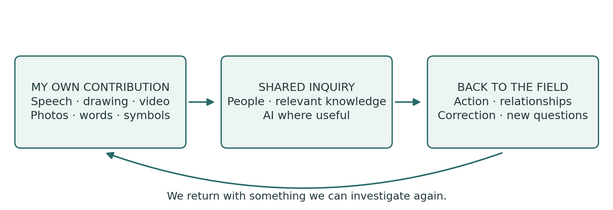
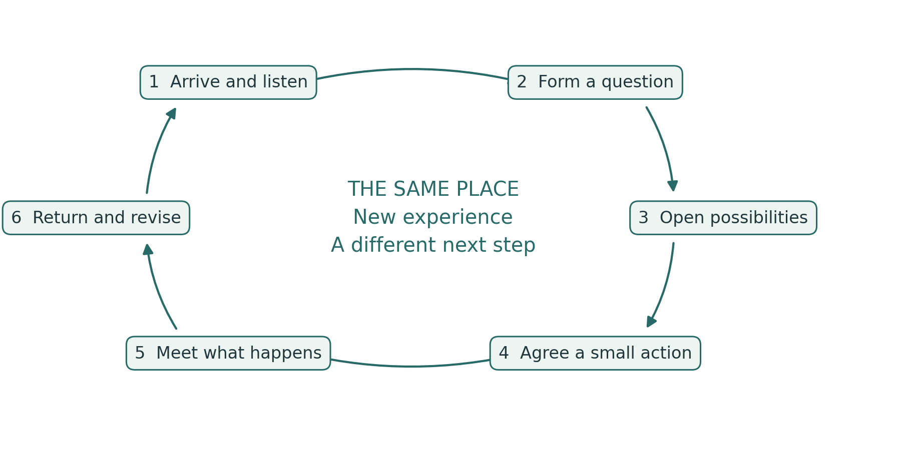
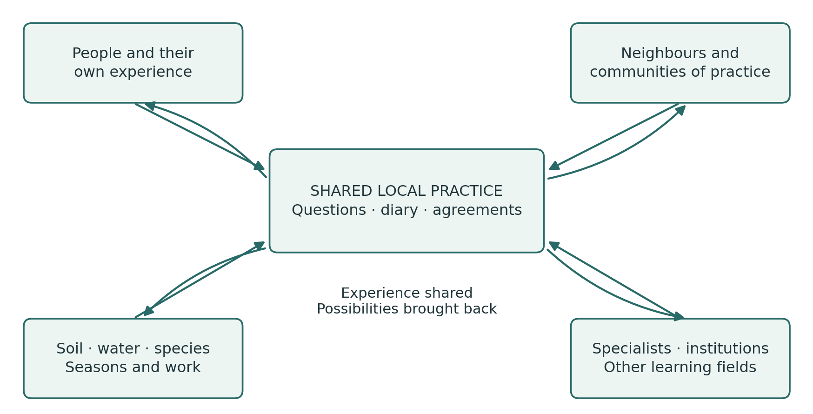
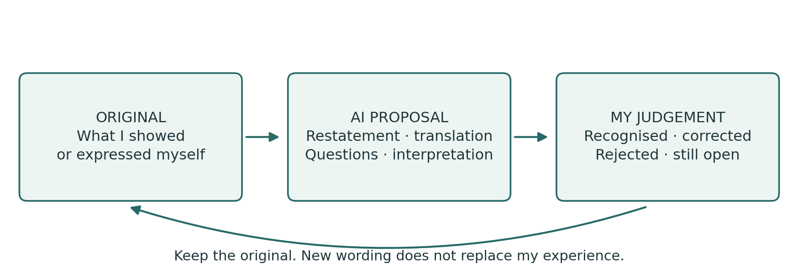

The Field Diary
The Field Diary
From personal experience to shared capacity for action
A Practice Guide to learning spirals, PG Ledger and critical dialogue with AI
English edition v1.0 · 24 October 2026
Published by Spiralweb Stewardship Association · Spiralweb Papers
Developed through the work on Learning with Living Places
The Field Diary is an open practice guide published by Spiralweb Stewardship Association through Spiralweb Papers. It begins with people’s work in a living place: something is noticed, recorded and investigated together. An action becomes possible, and experience changes the next step. The guide connects this movement with relevant knowledge, critical dialogue with AI and resources that can help sustain the field.
Begin with something concrete from your own practice. Speech, drawing, personal symbols, photographs, video and writing can preserve an experience. The group arranges access to the tools and support it needs; having your own phone is not a requirement. A chosen contribution provides a reference for later comparison and correction. People act as critical friends to AI, individually or together. Experience comes first; not everything experienced needs to be recorded.

A connected practice
The diary holds your own records of experience. Shared inquiry connects selected contributions with a question. PG Ledger holds the agreed memory of actions, decisions, resources and what happens later. The learning spiral is the return through which experience can change understanding and subsequent practice. The following pages first show a complete inquiry, then explain how its different parts work.
The guide brings together a practical application of Healthy Roots, PG Ledger and human authority in work with AI. At spiralweb.earth you can find the Association and its place-based relationships. At papers.spiralweb.earth you can find papers, protocols and tools. The material can be used without a partnership with the Association. Your own experience can also lead to proposals for changing the shared tools.
Use the guide independently and adapt it locally. Follow the introduction, begin with a current question or consult the forms as needed. No one has to complete every sheet. The contents are clickable; concept links lead to the underlying work. The reproducible sheets follow the main text.
The Field Diary · v1.0 1 / 27
Contents and practical tools
Start by reading a complete inquiry and the distinction between diary and ledger. The main text is on pages 3–13. Begin with your own contributions on pages 14–16. When the group needs a shared memory, choose among the forms on pages 17–26.
03 An inquiry from first observation to return
04 Diary, shared inquiry and PG Ledger
05 The six movements of the learning spiral
06 Experience with a clear source
07 Assessments, the unknown and what is not recorded
08 From personal contributions to a shared question
09 People as critical friends to AI
10 Learning activities with a clear purpose
11 Organising the work over time
12 Stewardship economy and shared possibilities
13 Shared memory, responsibility and verification
14 Worksheet for my own contribution
15 Worksheet for a trial and a return
16 Worksheet for AI dialogue and chosen sharing
17 When the group needs a shared memory and Format 1
27 Further reading and terms of use
Who uses what? The diary and supporting sheets are available to everyone. Observation and action, Formats 2 and 3, support the group’s inquiry. Formats 1, 4 and 5 support shared review, decisions and financial records. The people with agreed responsibilities maintain and confirm the records; everyone affected must be able to ask questions and make corrections.
No one has to complete every sheet. Fields may be left blank and must not be filled by guessing. Use the forms of expression and the amount of documentation the task calls for.
The Field Diary · v1.0 2 / 27
An inquiry from first observation to return
This illustrative sequence shows how a diary, conversation, tools and action can work together. It is an example to try, not an account of an activity already carried out.
Something is noticed
A grower films a patch of dry soil and explains in her own language what she has noticed. Someone else draws an area that seems moister. They keep their own contributions in the diary with a simple reference. At this stage, they have different observations and possible explanations.
A shared question takes shape
At a meeting they show their selected contributions. The group compares experiences and chooses to investigate soil cover. It explains its choice and keeps other questions for later. AI can help restate the contributions and suggest relevant explanations. People check these and correct leaps from observation to claim.
An action is agreed
The group defines a small trial, clarifies the authority needed and agrees time, responsibilities, materials and the next visit. The action sheet preserves the agreement. A diary contribution can be linked to the shared memory by reference without being rewritten.
The work behind the trial becomes visible
A neighbour offers pruning material. The team checks its suitability and agrees transport and ongoing care. It realises that one person would otherwise carry too much work between meetings. The question broadens: how can the necessary care be sustained? A decision and an actual expense are recorded in their respective forms.
The field and the group respond
At the next relevant visit, new observations are compared with the starting point. AI has suggested that less water was used, but this was not measured. The group corrects the text and examines what can be said. Perhaps transport required too much work, or other conditions explain the difference. The trial and the division of work are changed.
Experience opens the next possibility
The group can now invite an adviser or farm school to help investigate a more clearly defined question. A new agreement may provide access to materials, learning or payment for necessary follow-up. On returning, the group examines what actually became possible. The shared understanding is better grounded, while disagreement and uncertainty may remain.
The process may take several working days or a season. A better question, a necessary pause or a reasoned decision not to proceed can be an important outcome of returning to the inquiry.
The Field Diary · v1.0 3 / 27
Diary, shared inquiry and PG Ledger
The diary and ledger hold different parts of the same practice. The diary provides room to notice and investigate. The ledger connects selected material with the shared memory needed for responsibility and follow-up. The learning spiral is the movement through time; it is not another document.
Part | Function | A concrete example |
|---|---|---|
My diary | My observations, questions, trials and reflections in my chosen media. | A video of water moving, with my explanation. |
Shared inquiry | Conversation, comparison and checking against relevant knowledge around a chosen question. | We investigate why water gathers here. |
PG Ledger | An agreed, correctable memory of the basis for work, responsibilities, resources and later consequences. | The observation is connected with an action and a later visit. |
Five operational formats | Tools for particular situations within the shared memory. | One sheet records an action; another an expense. |
Return | Experience can change understanding, agreements and next steps. | After rain, we review the trial and change it. |
When diary material becomes relevant to the ledger
When the group has a clear purpose for retrieving a contribution and connecting it with shared work, it agrees which part to include, who has access and how it can be corrected. A reference to the original may be enough. Personal material does not automatically become shared, and the whole diary never has to be included.
What makes the ledger a living memory
A single sheet is a record. Connected records become a useful memory when their connections, sources and responsibilities can be traced. PG Ledger comes alive through return: people investigate what happened next and let the findings change their next step. Five completed forms do not in themselves establish this practice.
A personal diary may remain independent. Shared work can also begin with an existing local record-keeping system or a conversation. Experience matters before it is recorded; a sheet is not a condition for being heard. What matters is the connection between experience, agreement, action and correction.
The Field Diary · v1.0 4 / 27
The six movements of the learning spiral
Learning arises through repeated engagement with a question, its practical consequences and other people’s experience. A turn of the spiral may last a conversation, several working days or a season. The sequence offers direction; pace and return follow the needs of the inquiry.

1. Arrive and listen. Who and what is here, and what experience do we bring?
2. Form a question together. What do we want to understand or change?
3. Open explanations and possibilities. Which interpretations and alternatives should we investigate?
4. Make an action possible. What will we try, with which resources and responsibilities?
5. Meet what actually happens. What do we observe, including what surprises us?
6. Return and let experience change the form. What should continue, change or end?
A provisional expectation connects the work
A working wager states what the group expects and what could lead it to change its understanding. It connects the question with action, learning, resources and later review. For example: a particular soil cover is expected to retain moisture if the material is suitable and the work can be sustained. Examine plant conditions, alternative explanations and the actual workload.
The Field Diary · v1.0 5 / 27
Experience with a clear source
A personal field diary may use paper, audio, images or video. Each person chooses how to express themselves. The shared field diary holds selected contributions and agreements worth keeping. Differences between contributions are preserved. A host, employer or facilitator cannot speak for other people’s experiences.
Observation before synthesis
Begin with what a person notices, does or wants to show. Attach a date, place and source to material that needs to be retrieved. A reference might be B01: first visit on [date] at [place]; photos and audio can be labelled B01-photo and B01-audio. The group chooses its own system and protects sensitive places and identities.
“Three plants have yellow leaves” is an observation. “I think they lack water” is an interpretation. Experience is already knowledge that repetition, measurement and other experiences can correct. A recording preserves the contribution; it does not by itself prove the explanation.
Help with expression and confirmation
When someone helps with writing, translation or recording, the person’s own words and meaning are preserved. The resulting account is returned to that person to correct or confirm. Where documentation matters, it identifies any assistance and translation involved. The original is kept when an explanation changes. An oral correction has the same standing as a written one and must be able to change the work.
Personal control and shared devices
Personal storage, group access, AI processing and publication are separate choices with specified purposes and recipients. Some things can remain unrecorded. Necessary information about finance and safety is defined and explained separately.
As a default, do not share identifiable images of children. Any exception requires prior clarification of applicable rules, relevant parental or guardian consent and the child’s own views according to age and maturity. The child’s privacy and safety take priority.
Agree responsibility, access, storage, synchronisation and removal of copies on shared devices. Secure an agreed copy before deletion. Before external AI processing, establish what will be sent and the service’s terms for storage and further use. Send only the selected material that is necessary.
Time is part of the task
In Learning with Living Places, agreed observation, diary work and shared interpretation are included in paid learning and working time. Additional contributions are voluntary. Other groups agree a realistic workload. Documentation should support the work and be simplified when it becomes a burden.
The Field Diary · v1.0 6 / 27
Assessments, the unknown and what is not recorded
An assessment concerns a particular condition at a particular time. A decision about recording concerns what is to be kept at all. These are different matters.
Traffic lights express a reasoned human judgement
Mark | Meaning for the next step |
|---|---|
Green | The available basis can support a small next step within the agreed mandate. |
Yellow | Conditions need attention, adjustment and a new assessment. |
Red | Protection, a pause or repair is needed. |
Unknown | There is not enough basis to make the assessment. This is not yellow. |
Assess the living place, people’s capacity to continue and shared governance separately. Keep the date, basis and uncertainty; do not calculate an average colour. Green in one area does not offset red in another. When people are exhausted, stop or reduce the work that depends on them; necessary care and a responsible handover may continue.
Unknown differs from not relevant and deliberately omitted
Unknown: the question is relevant, but we do not yet know enough. Not relevant: the question does not apply to this inquiry. Deliberately omitted: something is not recorded or included in this material. This says nothing about the condition concerned. A blank field has no unambiguous meaning; neither people nor AI may guess what it means.
The right to leave something unrecorded
A question may be approached through an observation, a personal experience or something experienced and cared for without being written down or recorded. Each person chooses what to keep. Other people’s inner experiences are theirs to offer. Protected shared knowledge is governed by the rights and agreements of those concerned.
There is also no requirement to mark something as deliberately omitted. Even disclosing that something exists can be sensitive. Silence needs no explanation and gives no permission to fill the gap. Agreed necessary information about finance, safety and shared responsibility is defined separately; it does not give access to a person’s whole diary.
For example, soil moisture may be unknown because it has not been examined sufficiently. A question about a stream may be irrelevant to this bed. A private recording can be kept outside the shared material without being mentioned there.
Underlying work: Knowing From the Ground · Moral Biology
The Field Diary · v1.0 7 / 27
From personal contributions to a shared question
An AnchorPoint sustains local connections between people, places, knowledge, agreements and resources over time. Shared inquiry may take place in person and continue through relationships and online. A shared account does not in itself create shared authority; decision rights must be agreed.

A simple shared beginning
Each person has the opportunity to offer one chosen contribution and may also choose not to share. The group examines similarities and differences and selects a question with a clear explanation. The choice considers interest, significance, time and feasibility. Other questions are kept for a later return. The record must allow disagreement about the choice, and whose voices were not heard, to remain visible.
When the question reaches beyond the group
Agree who to contact, what the group wants to ask, which material may be shared and who will bring the answer back. Advice, laboratory analysis, institutional dialogue or contact with other growers are considered alongside the original experiences. An external response informs the next action only after relevant local review and agreement. This is bottom-linking in practice.
Bioregional connections
Follow the conditions on which the question depends: water, soil, species, seeds, food, work and institutional decisions. Maps and seasonal calendars can reveal connections across property and project boundaries. Different voices and professional methods can correct one another. What actually happens in the field can contradict any of our explanations.
The Field Diary · v1.0 8 / 27
People as critical friends to AI
Individually or together, people take the role of critical friends to AI: open to what it may offer and alert to errors, overinterpretation and shifts in meaning. AI can support expression, translation, work with sources and comparison. Its contributions become useful to the inquiry through human scrutiny and testing in practice.

Check the account before interpreting it
AI first receives a limited task and the material selected for that purpose. With a photo or recording, check its account before proceeding. Unclear words, images and translations remain marked as unclear. Where language or media support is inadequate, use competent human assistance.
A starting prompt
First describe what you can actually read, hear or see in the selected material. Mark uncertainty and wait for my correction. Distinguish my observation, my explanation and your suggestions. Do not fill blank fields. Keep unknown, not relevant and deliberately omitted distinct when they are stated. Infer nothing from silence and do not try to reconstruct omitted content. Only then suggest alternative explanations and ways to investigate them. Invent no information or sources.
Then ask: which statements come from my material? What has AI added? Which sources can be checked? Have uncertainty and disagreement been preserved? What needs another observation or a specialist’s judgement? AI may also leave out a relevant possibility; its answer does not set the limits of the inquiry.
Last Impulse in practice
The relevant person can understand, correct, reject and stop an account or action and is responsible within their mandate. Silence is not approval. Agreement on wording is not permission to publish or take practical action.
For example, “The soil felt cooler” becomes “Water use fell” in the AI text. The person points out the leap, corrects the account and decides what investigation is needed. The original, the AI contribution and the correction provide a concrete basis for assessing AI in Right Relationship.
The Field Diary · v1.0 9 / 27
Learning activities with a clear purpose
A learning activity offers a way to develop a particular skill or understanding. It may be a short conversation, a field walk, a trial, a demonstration or a task between meetings. The diary can hold records of experience from the activity. Use an operational format when a specific need for a shared record arises.
Activity | What is practised | Possible material |
|---|---|---|
Noticing and describing | Distinguishing an observation from its possible explanation. | A drawing, words, photo or personal recording. |
Comparing places or times | Examining similarities, differences and the conditions for comparison. | Two observations with their context identified. |
Examining AI contributions | Recognising, correcting and challenging a reworked account. | The original, AI proposal and human correction. |
Choosing and acting together | Explaining a choice and clarifying authority, resources and follow-up. | A shared question and an agreement with a defined scope. |
Seeking knowledge or support | Expressing a need and assessing a response from others. | A request and something useful in return. |
Showing a practice to others | Explaining and demonstrating what has been learned, with room for questions. | A demonstration or a selected contribution to learning. |
Six questions for planning
Purpose: what should this activity help people learn?
Starting point: which experience or material do we begin with?
Action: what exactly will we do, with which support and time frame?
Conversation: what do we investigate together, and where might we disagree?
Memory: what is worth keeping, by whom and in which form?
Return: when and how will we use the experience again?
Agreed tasks are included in the programme’s paid learning and working time. There is no expectation of a daily submission from a personal diary. An activity succeeds when it opens relevant learning and action; the amount of documentation is not a goal in itself.
The Field Diary · v1.0 10 / 27
Organising the work over time
Rhythm and continuity of inquiry
A working day may begin with what the group wants to notice and end with what needs follow-up. The group returns to its inquiry in relation to actions, seasons and concrete decisions. The group agrees a rhythm for shared review that keeps questions, resources and experience connected without unnecessary duplication of documentation.
The five learning strands are soil, water and place; food systems and habitats; stewardship economy; collaboration and institutions; and teaching and exchange. One question can connect several strands. They help open the inquiry and reveal overlooked relationships. Also make room to demonstrate a technique, explore or share something surprising without requiring a record.
An example with two learning plots
On a farm, two plots are prepared for different cultivation trials. The team describes their starting conditions through its own observations and relevant specialist inquiry. It chooses a question, perhaps about soil cover and water, agrees a small trial and also documents materials and working time. A farm school or adviser is involved where this can help the inquiry. At the next relevant visit, the team reviews the process and the next step.
Phase | Shared work | Basis for the next phase |
|---|---|---|
Preparation | Programme stewards try the method and clarify language, access, roles and safety. | A tested initial offer and clear agreements |
Opening | The group tries different ways of expressing experience and helps choose questions. | Local questions and adapted tools |
Inquiry | Practical work, observation, informed dialogue and limited trials. | Experience, corrections and decisions |
Exchange | Selected material is brought into conversation with relevant others. | Useful responses and new connections |
Continuation | Learning, equipment, resources and responsibilities are reviewed. | An agreed handover and realistic next steps |
Preparation and care
Allow time to prepare the tools before the group begins. Agree practical arrangements, equipment, safety and necessary competence before taking action. Observation does not authorise risky contact with water, soil, plants or installations. Agreed tasks are funded or their scope is openly limited. Ecological development and further collaboration may extend beyond a grant without being funded by it.
The Field Diary · v1.0 11 / 27
Stewardship economy and shared possibilities
Stewardship economy asks how work, knowledge, resources and responsibility can sustain the living conditions on which people and societies depend. Payment can protect time and people’s capacity to continue; it does not express the whole value of a person or place. The inquiry connects cultivation with the relationships and institutional conditions that make continued care possible.
Abundance refers both to human creative capacity and to the possibilities that collaboration can open. The question is concrete: what is already here, what can be developed and what can we gain access to together? Possibilities may include materials, advice, skills, money, access and help with the workload. Scarcity and necessary costs remain visible.
Question from the field | Possible connection | Possible return |
|---|---|---|
How does the soil retain moisture? | Neighbours with suitable surplus material | Soil cover and an agreement on transport |
How can the soil be improved? | People with composting knowledge and livestock keepers | Suitable compost or manure, with advice |
How can we grow more plants? | A seed-sharing group or farm school | Seeds, cuttings and propagation skills |
How can irrigation be improved? | Growers and technical advice | A trial, a repair or a budget |
What explains this damage? | A relevant specialist | An assessment and a safe next step |
How can the experience be shared? | Other growers and learning groups | A demonstration or learning material |
How can the next step be funded? | The group’s proposal and dialogue | A specific request with evidence and prices |
Who can carry the work? | A shared review of tasks | Cover and a handover of responsibility |
Follow the contribution back into practice
Distinguish an idea, a contact, an agreement, a contribution received and an actual effect. Check suitability, safety, transport, working time, ownership and subsequent responsibility. A possible donation is not a resource already received. Keep track of relevant offers declined and hidden work where this is possible within agreed boundaries.
The Steward’s Journey describes several possible relationships to the work, without a fixed sequence. A grower may investigate their own place, exchange experience with others or enter a limited agreement for a trial. Support needs its own agreement; it is not earned by progressing through prescribed stages. Peer teaching and fundraising can develop where people wish and are able to pursue them.
The Field Diary · v1.0 12 / 27
Shared memory, responsibility and verification
PG Ledger connects selected observations with actions, decisions, resources and later consequences. Use the forms according to the task. Reuse originals and references; the same material is not rewritten into several parallel truths.
Operational format | Function |
|---|---|
Observation | Preserves what was observed, its source, context and uncertainty. |
Bounded action | Defines up to three actions that can be sustained, with responsibility, a way to stop and a return. |
Decision memory | Preserves reasoning, mandate, significant disagreement and later changes. |
Financial records | Connects a money flow, purpose, documentation and later observation. Formal accounts are kept separately. |
Shared review | Keeps assessments of Land / Life, Steward Viability and Governance / Commons separate. No overall score. |
Workable agreements
The group agrees who is responsible for tasks, who provides cover, who has authority to decide, how disagreement is handled and when to review the work together. Funding and local inquiry are connected through clear purposes and responsibilities. People do not approve their own payments or handle complaints about themselves. An independent contact route is known and accessible.
People who wish to can develop peer teaching or new learning communities and set their own aims. Shared organisation should allow both continuity and rotation and make care, translation and coordination visible. Voluntary contributions are not used to conceal necessary functions that have no funding.
Investigate whether the method works
Use actual inquiries to assess whether each person can recognise and correct their contribution, challenge AI, influence a shared question and use experience on returning. Keep both helpful and misleading AI contributions alongside the human correction. This provides a basis for research into learning and AI use without confusing fluent text with learning. Also test whether the material is easy to begin with, whether the symbols are understood and whether a correction actually changes subsequent work.
Follow changes in the field, workload and actual scope for decision-making too. Ecological improvement does not offset exhaustion or disregard for rights. Unknown conditions and a choice not to record are not signs of failure. Experience can correct the toolbox, research and protocol. Assess AI benefits after accounting for time spent checking, translating and any work shifted to others.
The Field Diary · v1.0 13 / 27
Worksheet for my own contribution
Use drawing, symbols, words, photos, audio or video. This sheet is an option; refer to an original you have chosen. Experience does not have to be recorded to matter in conversation.
Date or time __________________ Place __________________
My mark or reference __________________
What I notice or want to show
What I wonder about
________________________________________________________________________
________________________________________________________________________
What this reminds me of, or what I know from experience
________________________________________________________________________
________________________________________________________________________
If I use a recording or photo, its reference is __________________
If someone helped me record my contribution __________________
This is my own material. I choose what to keep and share. Blank fields need no explanation. Sharing is agreed for a particular contribution and purpose.
The Field Diary · v1.0 14 / 27
Worksheet for a trial and a return
An optional aid to conversation and return. Refer to relevant operational formats rather than repeating information. Keep unknown, not relevant and omitted distinct when stated; blank fields need no explanation.
Place __________________ Date __________________ Reference __________________
Our question and provisional expectation
________________________________________________________________________
________________________________________________________________________
What we will try, and what could change our understanding
________________________________________________________________________
________________________________________________________________________
Who does what, with which resources and permissions
________________________________________________________________________
________________________________________________________________________
When we will return, and what would make us stop
________________________________________________________________________
Return with date: what actually happened
________________________________________________________________________
________________________________________________________________________
What we change or still understand differently
________________________________________________________________________
________________________________________________________________________
Refer to an observation, decision or expense where useful. An expected effect is not an observed result.
The Field Diary · v1.0 15 / 27
Worksheet for AI dialogue and chosen sharing
Individually or together, people act as critical friends to AI. Keep the original, the reworked account and the correction separate. AI must not fill blank fields, infer meaning from silence or reconstruct omitted content.
Date __________________ Reference for my material __________________
AI service or other assistance, if relevant __________________
The specific help I asked for
________________________________________________________________________
What AI restated or proposed
________________________________________________________________________
________________________________________________________________________
What I recognise, correct, reject or do not yet know
________________________________________________________________________
________________________________________________________________________
________________________________________________________________________
What I or we will now investigate or do
________________________________________________________________________
________________________________________________________________________
If I choose to share something
Selected contribution __________________
With whom __________________ For what purpose __________________
May it be sent to an AI service __________________
May anything be published, and in what form __________________
How my correction or changed sharing decision will be handled __________________
A sharing agreement covers only what was agreed. Explain any limits on deletion or withdrawal before sending material onwards. My agreement does not automatically include another person’s rights.
The Field Diary · v1.0 16 / 27
When the group needs a shared memory
Format 1 Shared review
Choose among the five forms according to the task. Everyone can contribute, ask questions and make corrections. Agree who keeps the sheet and who has authority to confirm an assessment, decision or financial record. No one has to complete all five.
PG Ledger Format 1 · Steward Review Dashboard · Adaptation in this guide
Source edition v1.4.2 · 18 October 2026 ·
https://papers.spiralweb.earth/formats/format1-dashboard
When the group needs to assess whether the next period can be sustained, this format helps keep the three conditions separate.
At an agreed return to the inquiry, assess three conditions separately: the living place, people’s capacity to continue and shared governance. The judgement belongs to people with relevant knowledge and authority. It is not a measurement or an overall grade.
An illustrative example from the same inquiry
Land / Life
The surface is partly covered. Moisture was assessed during one visit; the reasons for differences remain unclear. Assessment: Unknown.
People’s capacity to continue
The agreed hours have been used, but transport takes more time than planned. Assessment: Yellow; a new agreement is needed.
Shared governance
The mandate and task holders are known; permission to share a recording has not been established. It is not shared yet.
Use and connections
The example does not justify an overall colour. Unknown means insufficient basis for an assessment, not yellow. The group agrees the next period within an agreed scope and preserves significant disagreement. Recording may be omitted; omission is not an assessment of a condition.
The guide’s worksheet follows on the next page. It is an adaptation with the same core function. The full source form and its current version can be opened through the link. Fields can be connected with an oral contribution, drawing or recording.
The Field Diary · v1.0 17 / 27
Format 1 Worksheet
PG Ledger Format 1 · Steward Review Dashboard · Adaptation in this guide
Source edition v1.4.2 · 18 October 2026 ·
https://papers.spiralweb.earth/formats/format1-dashboard
Place or relationship __________________ Date or period __________________
Source and responsibility __________________ Reference and access __________________
Purpose of the review __________________ Contributors __________________
When an assessment is agreed, choose green, yellow, red or unknown. Otherwise leave the field blank.
Land / Life: basis, interpretation and uncertainty
________________________________________________________________________
________________________________________________________________________
People’s capacity to continue: basis, interpretation and uncertainty
________________________________________________________________________
________________________________________________________________________
Shared governance: basis, interpretation and uncertainty
________________________________________________________________________
________________________________________________________________________
Disagreement, next limited step, responsibility and return
________________________________________________________________________
________________________________________________________________________
No average colour. Green can support a small next step; yellow calls for adjustment; red calls for protection, a pause or repair. Unknown means insufficient basis. Blank means no assessment and must not be filled by guessing.
The Field Diary · v1.0 18 / 27
Format 2 Observation
PG Ledger Format 2 · Observation Sheet · Adaptation in this guide
Source edition v1.3.2 · 18 October 2026 ·
https://papers.spiralweb.earth/formats/format2-observation
When an observation needs to be retrieved and compared, this format helps preserve its basis.
Use when something about a place, visit or event is worth keeping. First describe what was noticed and how the observation was made. The sheet’s eight land-based prompts are possible starting points that can be changed or left out.
An illustrative example from the same inquiry
Observation
During visit B01, the surface feels dry in two places. Three plants have yellow leaves. B01-photo and B01-audio refer to the person’s retained original contributions. The B01 system is explained in the section on sources.
Provisional explanation
Lack of water is one possibility. Soil, species, previous watering and other conditions have not been examined sufficiently.
Next clarification
The group compares the observation with the watering history and agrees a more consistent comparison.
Use and connections
Not observed does not mean absent. A possible species identification needs checking. Keep the place, time, observation effort and uncertainty.
The guide’s worksheet follows on the next page. It is an adaptation with the same core function. The full source form and its current version can be opened through the link. Fields can be connected with an oral contribution, drawing or recording.
The Field Diary · v1.0 19 / 27
Format 2 Worksheet
PG Ledger Format 2 · Observation Sheet · Adaptation in this guide
Source edition v1.3.2 · 18 October 2026 ·
https://papers.spiralweb.earth/formats/format2-observation
Place or relationship __________________ Date or period __________________
Source and responsibility __________________ Reference and access __________________
Time, duration, weather and method __________________
Adapt the prompts. Unknown means insufficient basis; not relevant means outside the question. Something may be omitted without explanation.
Surface and soil cover __________________________________________________
Vegetation structure __________________________________________________
Water movement __________________________________________________
Change and succession __________________________________________________
Species and signs of life __________________________________________________
Soil signals __________________________________________________
Movement of organic material __________________________________________________
My own or freely offered experience of the work’s rhythm __________________________
Personal experience and local knowledge, with sources
________________________________________________________________________
Interpretation, source or recording, and what is unknown
________________________________________________________________________
________________________________________________________________________
The Field Diary · v1.0 20 / 27
Format 3 Bounded action
PG Ledger Format 3 · Bounded Action Sheet · Adaptation in this guide
Source edition v1.3 · August 2026 ·
https://papers.spiralweb.earth/formats/format3-action
When the group is ready to agree an action, this format helps with responsibility, limits and follow-up.
Use for a small action that those responsible can actually understand, sustain and stop. Agree its purpose, mandate, affected conditions and return. An action may also be to seek expert help or wait for a necessary clarification.
An illustrative example from the same inquiry
Action
Try suitable soil cover on an agreed small area and keep a comparison area where appropriate for the inquiry.
Responsibility and scope
The team’s named task holder obtains the necessary permission and clarifies materials, safety and working time.
Stop and return
Do not spread unknown material. Stop if risk is unresolved or the agreed limits of the work are exceeded. Agree the next visit before starting the trial.
Use and connections
Use no more than three concurrent actions that people and place can sustain. A smaller action is not automatically harmless.
The guide’s worksheet follows on the next page. It is an adaptation with the same core function. The full source form and its current version can be opened through the link. Fields can be connected with an oral contribution, drawing or recording.
The Field Diary · v1.0 21 / 27
Format 3 Worksheet
PG Ledger Format 3 · Bounded Action Sheet · Adaptation in this guide
Source edition v1.3 · August 2026 ·
https://papers.spiralweb.earth/formats/format3-action
Place or relationship __________________ Date or period __________________
Source and responsibility __________________ Reference and access __________________
Basis, purpose and necessary permission
________________________________________________________________________
________________________________________________________________________
Action — up to three | Task holder | By when |
|---|---|---|
1 __________________ | ________________ | ____________ |
2 __________________ | ________________ | ____________ |
3 __________________ | ________________ | ____________ |
Affected conditions, safety, limits and scope for repair
________________________________________________________________________
________________________________________________________________________
Who can stop, and what must not begin yet
________________________________________________________________________
________________________________________________________________________
What we follow, and when we return
________________________________________________________________________
________________________________________________________________________
The Field Diary · v1.0 22 / 27
Format 4 Decision memory
PG Ledger Format 4 · Governance / Decision Log · Adaptation in this guide
Source edition v1.3.2 · 18 October 2026 ·
https://papers.spiralweb.earth/formats/format4-decision
When a decision needs to be explained and revisited, this format helps preserve its basis.
Use when a decision, change of role, exception, pause or ending needs to be retrievable and open to challenge. The sheet preserves the decision’s basis at the time. Later experience is added with a date; it does not rewrite the past.
An illustrative example from the same inquiry
Decision
The group changes the transport task and reduces the trial’s scope within its agreed mandate.
Reasoning and disagreement
Transport took more time than expected. One member preferred to postpone the trial altogether. This view is preserved.
Authority and correction
The relevant decision-maker confirms the change. Budget approval and practical implementation follow their own agreements. The decision is revisited after the next delivery.
Use and connections
The sheet records authority and reasoning; it does not create a mandate. AI can help draft an account, while people examine and approve the relevant version.
The guide’s worksheet follows on the next page. It is an adaptation with the same core function. The full source form and its current version can be opened through the link. Fields can be connected with an oral contribution, drawing or recording.
The Field Diary · v1.0 23 / 27
Format 4 Worksheet
PG Ledger Format 4 · Governance / Decision Log · Adaptation in this guide
Source edition v1.3.2 · 18 October 2026 ·
https://papers.spiralweb.earth/formats/format4-decision
Place or relationship __________________ Date or period __________________
Source and responsibility __________________ Reference and access __________________
Decision, purpose and effective date
________________________________________________________________________
Basis, uncertainty and alternatives considered
________________________________________________________________________
________________________________________________________________________
Decision authority, mandate and any conflict of interest
________________________________________________________________________
People affected, heard, absent or dissenting, and consent boundaries
________________________________________________________________________
________________________________________________________________________
AI contribution and human checking, if relevant
________________________________________________________________________
Responsibility, return and conditions for change or stopping
________________________________________________________________________
________________________________________________________________________
The Field Diary · v1.0 24 / 27
Format 5 Financial records
PG Ledger Format 5 · Financial Ledger Sheet · Adaptation in this guide
Source edition v1.3.1 · 17 October 2026 ·
https://papers.spiralweb.earth/formats/format5-financial-ledger
When money actually moves, this format helps connect the flow with its purpose and later use.
Use for an agreed money flow, connecting it with its purpose, supporting documentation and later return. The record complements formal accounting. Material contributions and voluntary time may be referenced separately without inventing monetary values.
An illustrative example from the same inquiry
Money flow
An agreed transport purchase is recorded when it occurs, with the actual amount, currency, date, payer, recipient and supporting-document reference.
Purpose and classification
Transport of suitable soil cover for the trial. The person responsible for finance confirms the payment’s legal classification from the agreement and supporting documents. It cannot be inferred from a concept of value.
Later return
After delivery, record what actually arrived and was used, by whom and with which matters outstanding. The expected effect on the soil remains a hypothesis.
Use and connections
Keep expense and effect separate. The group may propose A/B/C according to the resource’s purpose; the person responsible for finance checks the classification. The codes do not indicate a colour or a healthy condition. Unresolved classifications remain questions.
The guide’s worksheet follows on the next page. It is an adaptation with the same core function. The full source form and its current version can be opened through the link. Fields can be connected with an oral contribution, drawing or recording.
The Field Diary · v1.0 25 / 27
Format 5 Worksheet
PG Ledger Format 5 · Financial Ledger Sheet · Adaptation in this guide
Source edition v1.3.1 · 17 October 2026 ·
https://papers.spiralweb.earth/formats/format5-financial-ledger
Place or relationship __________________ Date or period __________________
Source and responsibility __________________ Reference and access __________________
Base currency __________________ Reviewed by __________________
A: Land and ecology · B: Steward viability · C: Coordination and governance.
Amount, currency, exchange rate and date
________________________________________________________________________
Source, recipient, payment method and supporting documents
________________________________________________________________________
Legal classification and resource reference
To be completed by the person responsible for finance, using the agreement and supporting documents. A/B/C indicates purpose; the same person checks the classification. Mark unresolved points as questions.
________________________________________________________________________
Access, consent and checking the record
________________________________________________________________________
Later observed return
Date, source, actual use and documentation
________________________________________________________________________
________________________________________________________________________
Uncertainty, correction and next review
________________________________________________________________________
________________________________________________________________________
Record one flow at a time. Formal accounts and approvals are kept in the authorised systems. An intention is not a result.
The Field Diary · v1.0 26 / 27
Further reading and terms of use
Papers is a public, versioned knowledge habitat. This Practice Guide brings selected ways of working into a practical whole. It establishes no new local authority and does not replace specific agreements. This first edition is open to informed criticism and local testing. Experience can change both the guide and its sources.
Healthy Roots
https://papers.spiralweb.earth/protocols/healthy-roots
PG Ledger
https://spiralweb.earth/pg-ledger/
The five operational formats
https://spiralweb.earth/formats/
Sophia Lumen
https://papers.spiralweb.earth/protocols/sophia-lumen
Moral Biology
https://papers.spiralweb.earth/papers/moral-biology
Knowing From the Ground
https://papers.spiralweb.earth/papers/knowing-from-the-ground
GP22 Capacity and Contact
https://papers.spiralweb.earth/papers/capacity-contact-stewardship-economy
GP23 A Decent Economy
https://papers.spiralweb.earth/papers/a-decent-economy-under-the-jurisdiction-of-life
Living Landscapes
https://papers.spiralweb.earth/papers/living-landscapes
The Steward’s Journey
https://papers.spiralweb.earth/papers/srip-the-stewards-journey
Atlas, working wagers and other Field Papers
https://papers.spiralweb.earth/library
FAO Farmer Field Schools
https://www.fao.org/farmer-field-schools/overview/en/
Lawrence Hall of Science nature journaling
https://lawrencehallofscience.org/activities/exploring-nature-journaling/
Free use with clear attribution
The guide’s text, figures and blank sheets may be copied, translated and adapted under CC BY 4.0. Attribution: Spiralweb Stewardship Association, The Field Diary, English edition v1.0, 2026. Indicate your changes. The five forms are translated from the Danish adaptations of the source editions identified with each format.
https://creativecommons.org/licenses/by/4.0/
Completed diaries, personal information and recordings are not automatically covered by the open licence. Sharing is agreed separately. External works retain their own terms. AI assisted the preparation; responsible human editing and local correction remain essential.
Published by Spiralweb Stewardship Association · Spiralweb Papers
spiralweb.earth · papers.spiralweb.earth
English translation of Feltets Dagbog, Danish v1.0.1 · 24 October 2026.
The Field Diary · v1.0 27 / 27